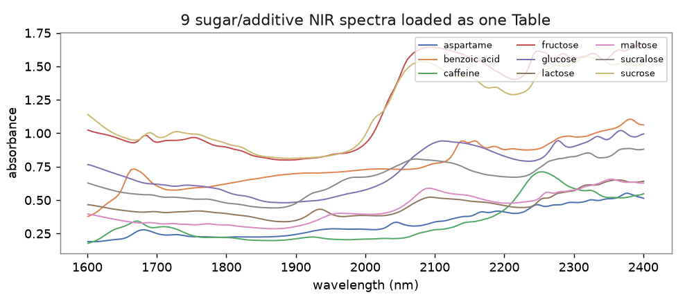
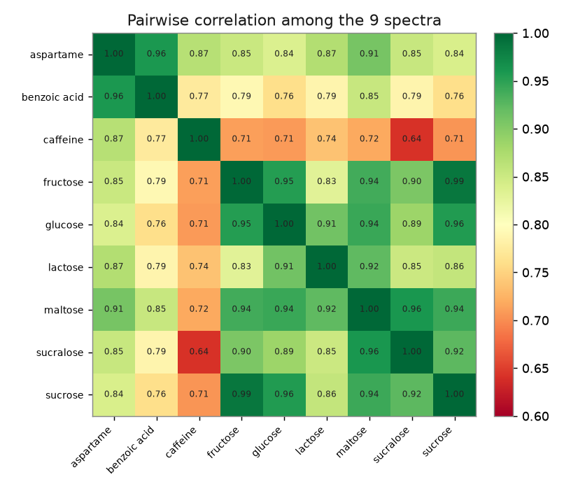
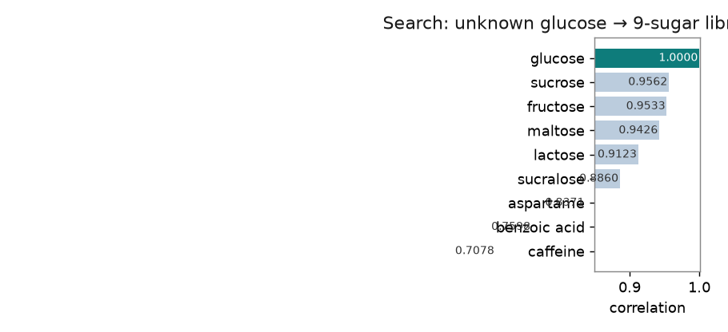
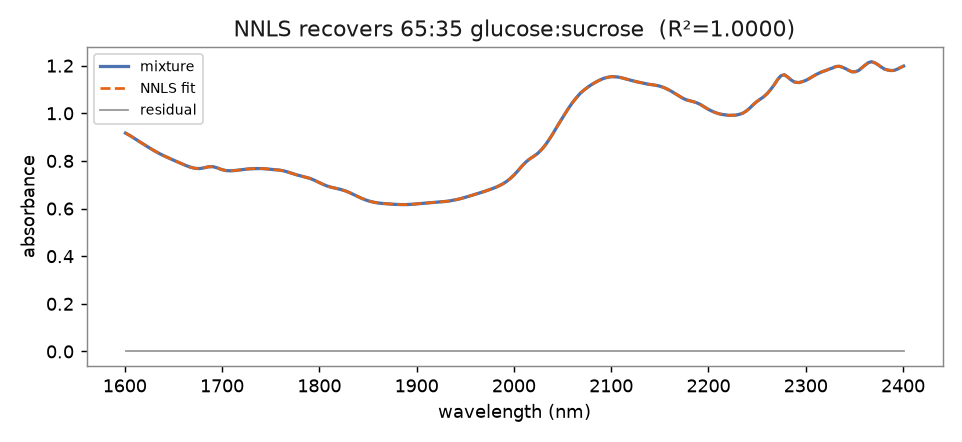
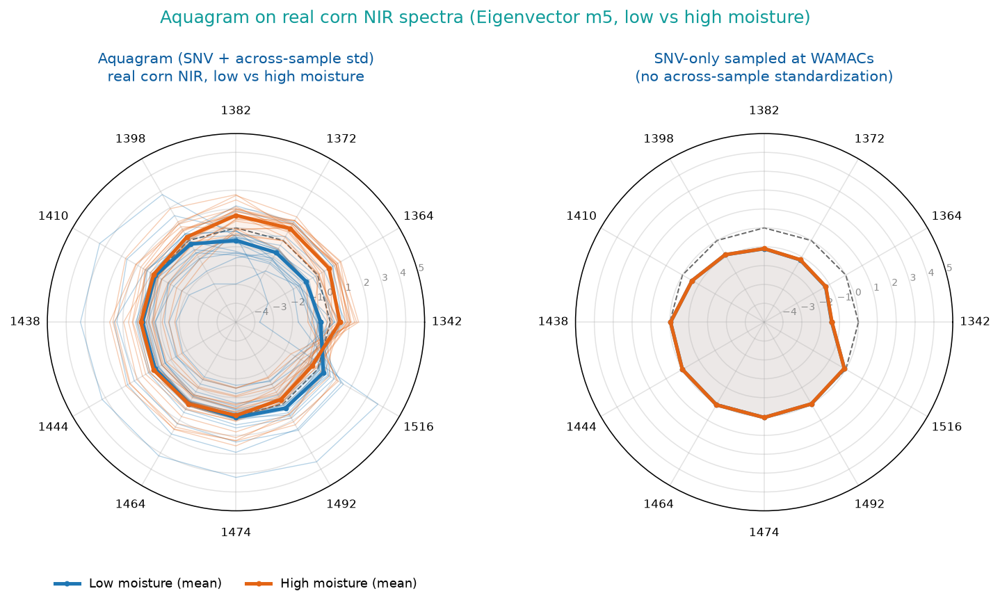

Eleven widgets, an end-to-end spectral-ID workflow
After installing, a new Spectra category appears in Orange's toolbox. Output tables follow the Orange-Spectroscopy convention (one column per wavenumber, one row per spectrum), so they plug straight into PCA, PLS, hierarchical clustering and other native Orange widgets.
Import Spectrum URL
Paste an IRUG id (e.g. 4119), an IRUG/SOPRANO page URL, or a direct JCAMP-DX / CSV URL — download, plot and output a table in one click. Fetch several to accumulate a set.
Merge Spectra
Overlay several spectra sources on one plot and output a single combined table (one spectrum per row, shared grid) for downstream analysis.
Load Spectra Files
Bulk-load a whole folder or .zip (no extraction): JCAMP-DX, CSV, matrix CSV and NetCDF .cdf all land in one combined table.
Spectrometer
Turn a camera + diffraction-grating spectrum photo into a calibrated spectrum: read intensity along a horizontal strip and map pixel → wavelength from known lines (a Theremino-style spectrometer).
Spectra Similarity
Pairwise similarity: Pearson correlation, cosine, spectral angle (SAM) and Euclidean distance. Overlapping bands are auto-aligned before comparing.
Spectral Library
Collect reference spectra into a library, save as a .speclib file (fully interoperable with the SpectraView desktop app), then search unknowns and output a ranked hit list and best match.
Mixture Analysis
Non-negative least squares (NNLS) decomposition of mixture ≈ Σ cᵢ·refᵢ: reports each component's coefficient, percentage and fit R², and overlays the fit curve and residual.
Aquagram (aquaphotomics)
Aquaphotomics: sample normalized absorbance at water's 12 characteristic bands (WAMACs) and draw a 12-axis radar plot to compare water's hydrogen-bond structure across samples/perturbations.
Peak Finder
Detect peaks and label them on the plot; measures position, height, FWHM, prominence and area, with adjustable thresholds and smoothing.
XRF Element ID
Finds peaks in an XRF spectrum (keV) and matches them to element emission lines (Kα/Kβ/Lα/Lβ, 53 elements Na–U), labeling "Fe Kα1" etc. right on the plot.
PLS-DA
Partial least squares discriminant analysis: class-colored score plot, loadings and VIP variable importance — see at a glance which bands separate your classes.
Install
▸ Desktop App (the standalone program downloaded from orangedatamining.com, opened by its icon) → use Method A.
▸ pip Orange (you ran
pip install orange3 and launch with python -m Orange.canvas) → use Method B.The two have separate Python environments; installing into the wrong one means the widgets won't appear.
Method A ── Desktop App (recommended)
Use the App's built-in Add-ons dialog to install from PyPI by name:
Open Add-ons
Orange menu Options ▸ Add-ons…
Add more… and type the name
Click Add more… (top-right), type orange-spectra (not a git URL — this box only takes PyPI names), tick it and click OK.
Restart Orange
The Spectra category with 11 widgets appears in the toolbox.
orange-spectra not found? It isn't on PyPI yet. See
PUBLISHING.md
to publish it. Until then, the desktop App can install via its own Python: locate the App's
python.exe (e.g. …\Orange\python.exe) and run
python.exe -m pip install "git+https://github.com/Tai-ShengYeh/spectraview.git#subdirectory=orange-spectra".Method B ── pip Orange
# 1) Orange + a Qt binding (without PyQt5 you get "PyQt5 ... not available" and it won't start) pip install orange3 PyQt5 PyQtWebEngine # 2) orange-spectra widgets (straight from GitHub) pip install "git+https://github.com/Tai-ShengYeh/spectraview.git#subdirectory=orange-spectra" # 3) Launch (use this command; do NOT click the desktop App icon — that's a different env) python -m Orange.canvas
▸
ImportError: PyQt5 … not available → missing Qt; run
pip install PyQt5 PyQtWebEngine.▸ Pasting a git URL into Add-ons ▸ Add more… gives "packages were not found" → that box only takes PyPI names; use Method B's
pip install for a git URL.▸ Reinstall only to update:
pip install --upgrade --force-reinstall --no-deps "git+https://github.com/Tai-ShengYeh/spectraview.git#subdirectory=orange-spectra",
then fully close and reopen Orange.▸ Every widget has an "ℹ How to use" box and a "📖 Open tutorial" button at the top — click it whenever you're unsure.
Widget-by-widget guide
Import Spectrum URL — import a spectrum from a URL
- Paste a source into the box and click Fetch & add:
- IRUG id:
4119(=http://www.irug.org/jcamp-details?id=4119, the PB15 phthalocyanine-blue Raman spectrum) - A SOPRANO page URL (KIK-IRPA pigment Raman database, Belgium)
- A direct JCAMP-DX (AFFN) or two-column CSV URL
- IRUG id:
- The spectrum is plotted live on the right (IR/Raman convention: wavenumber high → low).
- Fetch repeatedly to accumulate spectra; remove one or clear all. Multiple spectra are resampled onto a shared band.
<script> (as
"wavenumber":intensity pairs); SOPRANO stores it in a Dygraph data array. The widget parses the page source to recover the numbers.Spectrometer — image spectroscopy (camera + grating)
- Click Choose spectrum photo… and pick a camera + diffraction-grating photo (a horizontal colour band).
- Channel (luminance / R / G / B / sum) and Strip centre / height select the horizontal band to read.
- Calibration: enter
pixel=nmpairs (e.g. fluorescent mercury lines120=435.8, 410=546.1, 560=611.6), fit linear / quadratic; leave empty to keep the x-axis in pixels. - Top: photo + ROI band; bottom: extracted spectrum. Feed the output to Similarity / Library / Peak Finder / Data Table.
Load Spectra Files — bulk-load spectra files
- Add files… / Add folder… / Add .zip… — folders are scanned for every spectra file (optionally recursive); .zip archives are read without extraction.
- Formats: JCAMP-DX (AFFN), two-column CSV/TSV, matrix CSV (both SpectraView "combined export" layouts), and NetCDF .cdf/.nc (classic format — chemometrics datasets like applewine, ANDI chromatography exports).
- Everything previews on one plot; feed the output to Similarity / Library / PLS-DA / Data Table.
Merge Spectra — overlay & combine spectra
- Connect several sources to Spectra — multiple Import Spectrum URL widgets, Orange's File, or any wavenumber-column Table.
- All spectra overlay live; Normalize each (none / max=1 / area=1 / SNV) makes differently-scaled spectra comparable; Stack offset only spreads the display.
- The output is one combined Table (each row a spectrum on the shared overlap grid), ready for Similarity / Library / Mixture / PLS-DA.
Spectra Similarity — pairwise similarity
- Connect Data and References: outputs four metrics for every Data × References pair.
- Connect only Data: switches to all-pairs within Data (good for "how alike is this batch?").
- Sort by correlation / cosine (higher = more similar) or SAM / Euclidean (lower = more similar).
| Metric | Meaning | Property |
|---|---|---|
| correlation | Pearson correlation | Invariant to offset and scale; the most common for ID |
| cosine | Cosine of the angle | Invariant to scale |
| SAM | Spectral angle (radians) | Common in remote sensing / hyperspectral; lower = more similar |
| euclid | Euclidean distance (unit-normalized) | Intuitive "how different is the shape" |
Spectral Library — build and search a library
- Connect references to the Spectra input and click Add input spectra to library.
- Save… as
.speclib; Load… an existing one — the file format is identical to the SpectraView desktop app, so you can load e.g. the bundledexamples/sugars_nir.speclib(a 9-sugar NIR library). - Connect unknowns to Query: Hits outputs each query's ranking against every library entry with all four metrics — connect a Data Table to view.
- The Library output turns the whole library into a table — feed it straight into Mixture Analysis as references, or view it as spectra.
Mixture Analysis — unmix a mixed spectrum
- Connect the mixed spectrum to Mixture and a set of pure references to References.
- Solves
mixture ≈ Σ cᵢ·refᵢ (+ offset)by non-negative least squares (NNLS); coefficients are forced ≥ 0, which is physically meaningful. - The widget shows the composition table (coefficient, percentage) and R²; the plot overlays mixture, fit and residual.
- Feed Composition into a Data Table or Bar Plot; Fit contains three rows: mixture / NNLS fit / residual.
Aquagram — aquaphotomics radar plot
Aquaphotomics (Tsenkova) uses water's 12 characteristic NIR bands (WAMACs, water matrix coordinates, ~1336–1522 nm) as a "water fingerprint," plotting each sample's normalized absorbance at these 12 coordinates on a radar chart to compare changes in water's hydrogen-bond structure across states (temperature, concentration, cultivar… perturbations). Method after the NIRPY Research aquagram tutorial.
- Connect NIR spectra (load via Import Spectrum URL / File, or through Orange-Spectroscopy preprocessing).
- Pick a normalization:
- raw: absorbance sampled at the 12 bands, as-is.
- snv: SNV (Standard Normal Variate) each spectrum first, then sample.
- aquagram (default, classic): after SNV, standardize across the sample set at each band, (value − mean)/std — 0 is the group-average water spectrum, outward = above-average absorbance at that band, inward = below.
- The 12-axis radar plots live, one line per spectrum; the WAMACs bands are editable (defaults to the standard 12).
- The Aquagram Coordinates output is an n×12 table — feed it into PCA, clustering or a Data Table for quantitative comparison.
Peak Finder — detect & label peaks
- Connect spectra; every peak is marked with a triangle + position label immediately.
- Raise Min height / Min prominence (both % of the signal's full range) to reject noise; Min distance (x units) merges near-duplicate peaks.
- Smoothing window (Savitzky-Golay points, 0 = off) affects detection only — heights are still read from the raw signal.
- Feed the Peaks output to a Data Table: one row per peak (spectrum, position, height, FWHM, prominence, Gaussian-estimate area).
XRF Element ID — label elements on an XRF spectrum
- Connect an energy-calibrated (keV) XRF spectrum; the widget finds peaks automatically.
- Each peak is matched within Energy tolerance (default 0.10 keV) against a line database — Kα1/Kβ1/Lα1/Lβ1 (X-ray Data Booklet values, 53 elements Na–U).
- Peaks are labeled directly ("Fe Kα1", "Pb Lα1"); unmatched peaks get "?". The Lines menu restricts matching to K or L lines.
- The Elements output lists every candidate per peak (peak energy, line energy, Δ, height, element, line) — inspect in a Data Table.
PLS-DA — partial least squares discriminant analysis
- The data needs a class variable: after File/Datasets, use Select Columns to move the class column to Target.
- Classes are one-hot encoded and fit with PLS2 (NIPALS); the score plot is colored by class, the title shows training accuracy, and the status pane shows the confusion matrix.
- Components sets the number of latent variables (too many overfits — a permanent 100% accuracy is a warning sign).
- The VIP output (sorted): VIP > 1 is commonly read as an important variable — i.e. which wavenumbers separate the classes.
- Predictions = the input table + a predicted-class meta column, ready for Orange's evaluation widgets.
Run it on the bundled example data
Every figure and number below was produced by actually running these widgets'
algorithms on the repo's real example data (examples/sugars_nir.speclib — NIR
spectra of 9 sugars/additives, 3 unknown samples) and real corn NIR — not mock-ups. Do the same
on your machine and you get the same results.
① Import Spectrum URL → load a set of spectra at once
The 9 sugar NIR reference spectra loaded and overlaid on one chart (a table with one row per spectrum).

② Spectra Similarity → 9×9 correlation heatmap
Pairwise correlation of the 9 sugar spectra. Chemically sensible: sucrose vs fructose ≈ 0.99 (sucrose = glucose + fructose), while sugars vs caffeine ≈ 0.71 separate clearly.

③ Spectral Library → ranked search of an unknown sugar
Searching unknown_glucose.csv against the 9-sugar library correctly ranks glucose #1 (correlation = 1.0000).

| Rank | Match | correlation |
|---|---|---|
| 1 | glucose ✅ | 1.0000 |
| 2 | sucrose | 0.9562 |
| 3 | fructose | 0.9533 |
| … | … | … |
| 9 | caffeine | 0.7078 |
④ Mixture Analysis → NNLS unmixing
Feeding a spectrum blended as 65% glucose + 35% sucrose, NNLS recovers the fractions exactly (glucose 65.0%, sucrose 35.0%, everything else ≈ 0), R² = 1.0000.

| Component | NNLS coeff. | Fraction | Truth |
|---|---|---|---|
| glucose | 0.650 | 65.0% | 65% |
| sucrose | 0.350 | 35.0% | 35% |
| other 7 | ≈ 0 | ≈ 0% | 0% |
examples/cgl_mixture_nnls.py
regenerates this figure and writes cgl_components.speclib (3 pure-component
references) and cgl_mixture.csv (one mixture) — load them via Load Spectra
Files / Import Spectrum URL into Mixture Analysis to run a real NNLS
unmixing inside Orange.⑤ Aquagram → real corn-NIR water aquagram
Real corn near-infrared spectra (split into low vs high moisture): normalized absorbance at the 12 WAMACs drawn as an aquagram (radar plot).

Three classroom workflows
① View: paste URL → spectrum → table
The shortest path: one widget lets you "paste a URL and see the spectrum"; connect Orange-Spectroscopy's Spectra widget or a Line Plot to view it another way.
② Identify: build a library → search an unknown
Connect the unknown from a second source (a File widget reading a CSV, or another Import
URL) to the Library's Query. The .speclib file is fully interoperable with the
SpectraView desktop app and the bundled example library.
③ Quantify: mixture component analysis
References can come from the library's Library output — "build a library" and "unmix a mixture" chain naturally into one pipeline.
Integration with SpectraView and Orange-Spectroscopy
| Interop point | Detail |
|---|---|
| .speclib library | A library saved in Orange opens directly in the SpectraView desktop app via Library ▸ Load library…, and vice versa (e.g. examples/sugars_nir.speclib). |
| Table format | Column names = wavenumbers, one row per spectrum — the same as Orange-Spectroscopy and SpectraView's "combined-export X-matrix." Exported CSVs load both ways. |
| Algorithms | The four similarity metrics and NNLS are defined identically to SpectraView, so desktop and Orange results validate each other. |
| Downstream | The Spectra output feeds straight into Orange's PCA, PLS (chemometrics), distance matrix, hierarchical clustering and more. |
FAQ
Desktop Add-ons install fails: UnicodeDecodeError: 'cp950' codec can't decode…?
A known Orange desktop issue on Traditional-Chinese Windows (system code page cp950/Big5): the Add-ons dialog decodes pip's output with cp950 and crashes on UTF-8 characters (e.g. the "━" progress bar). It is unrelated to the package being installed. Two fixes:
- Install from the command line into the App's environment (recommended) — open Command Prompt and run:
"C:\Users\YOU\AppData\Local\Programs\Orange\python.exe" -m pip install orange-spectra
then fully close and reopen Orange. Add--upgradeto update later. - Make Python use UTF-8 — add a user environment variable
PYTHONUTF8=1(Edit system environment variables ▸ Environment Variables ▸ New), restart Orange, then use the Add-ons dialog normally.
Do I have to pip-install every time I use it?
No. Installation is one-off — once installed, the 11 widgets in the Spectra category are
there every time you open Orange. Reinstall only to update to a new version
(pip install --upgrade --force-reinstall --no-deps …), and after reinstalling
fully close and reopen Orange for it to take effect. Once the desktop App version is on
PyPI, the Add-ons dialog remembers it and offers online updates.
I don't know how to use a widget — how do I learn?
Every widget has an "ℹ How to use" box (short guidance) and a "📖 Open tutorial" button at the top-left; the button opens the matching section of this page. You can also look at the Live demo above to see what each widget actually produces.
IRUG fetch fails (connection error) — what now?
First check the page opens in a browser; campus networks sometimes block external sites. If it still fails, use the SpectraView desktop app's File ▸ Import from URL / IRUG… in a browser, save as CSV, then load that with Orange's File widget.
A JCAMP-DX file comes out garbled / fails to parse?
URL import supports AFFN (plain-number) JCAMP; for compressed forms (SQZ/DIF/DUP) open it in SpectraView (which has a full decoder) and export as CSV.
Can I compare two spectra with different bands?
Yes. Similarity and NNLS both take the overlapping band and interpolate onto a common grid first; only when there is no overlap at all do they report an error.
Can I baseline-correct / smooth before comparing?
Recommended: connect Orange-Spectroscopy's Preprocess Spectra widget (baseline, SNV, Savitzky-Golay, etc.) before comparison; or do airPLS in SpectraView first and export.